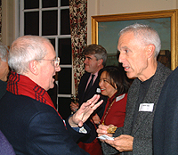

- story -
 |
This documentary chronicles the transformation of a transsexual named Theo from a woman to a man over the course of six years. The film successfully captures Theo's physiological and psychological changes during the process, as well as their effects on his lesbian lover and community of close friends. Taking full advantage of the unlimited access she received into an extraordinarily personal process, the director carefully composes a moving story about gender identity, relationships, and how even things that seem permanent can change. The story of the life of Teena Brandon, a transgender youth who preferred life in her male identity as Brandon Teena. A Hollywood version of the documentary The Brandon Teena Story. |
|
In an article on Wednesday, CNS complained that the Shepard film mixes "social commentary with made-for-TV drama. " "Some critics said the dramatization is little better than a public service announcement," the CNS article observed. "Family groups feared the movie had a pro-homosexual slant and depicted only one side of a complicated story. Peter LaBarbera of the Culture and Family Institute questioned why NBC chose to air a program about Shepard but ignore the case of Jesse Dirkhising, a 13-year-old who was murdered by two homosexuals in 1999. This entire domain and all associated e-mail addresses are located in the State of Washington. |
The evidence of the coalition's true tactics, strategies, and goals is contained in those materials -- and it's about time that reporters covering the religious right made a point of asking to see and hear those tapes for themselves. . Contents A Political Story -- Chapter and Verse by Joe Conason Conason is executive editor of The New York Observer. The religious right was back, in a new and fascinating form, the reports of its demise having been greatly exaggerated. It was a dramatic story, of a well-funded, tax-exempt organization that was using highly sophisticated techniques to train members all over the country to seize control of local and state Republican party committees, while working at the same time to re-elect George Bush.
 |
|  |
Uniquely suited to non-fiction subjects, direct cinema brings audiences face-to-face with real situations and people. Hand-held cameras and light-weight sound equipment allow an immediacy and spontaneity that few other documentaries can deliver. The story and the structure of each film emerge directly from the reality of the subject or situation that is recorded. Visitors often comment on how different the atmosphere is at Maysles Films than in most offices. It has produced a large extended family to carry on the non-fiction film legacy the brothers so believed in. |
further information: http://www.historychannel.com